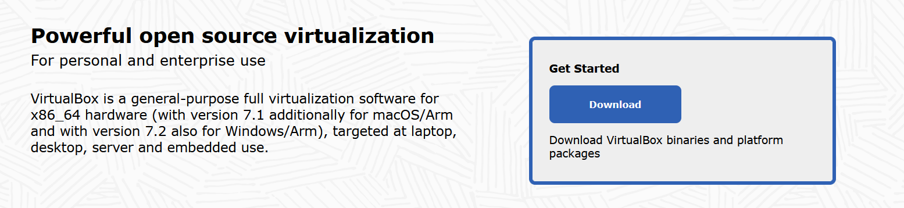
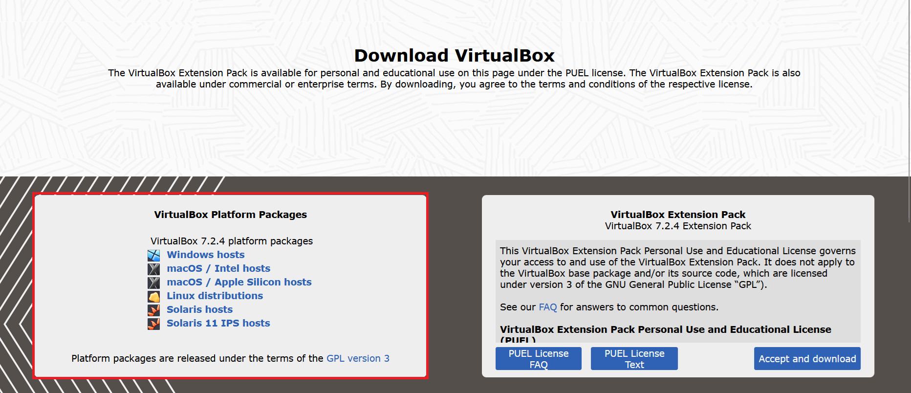
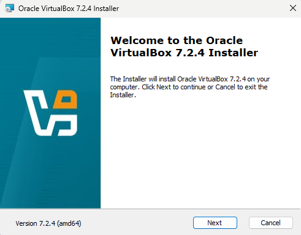
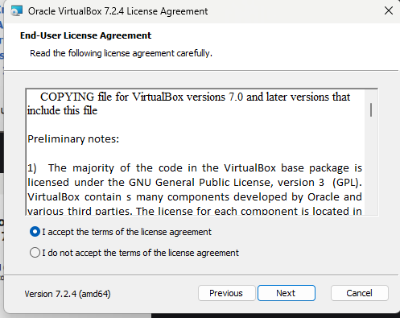
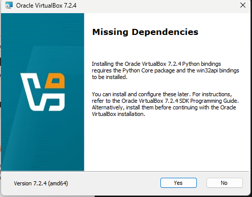

1
Instalacja VirtualBox
Pobieranie oprogramowania
Do stworzenia maszyny wirtualnej potrzebny jest odpowiedni software. Pobieramy go z oficjalnej strony VirtualBox.

Wybieramy wersję zgodną z naszym systemem (np. Windows hosts).

Instalator
Po pobraniu uruchamiamy plik i postępujemy zgodnie z instrukcjami (Next > Next).


Akceptujemy domyślną lokalizację instalacji lub wybieramy własną.

Ważne: Jeśli zobaczysz komunikat o "Network Interfaces" i "Dependencies", kliknij Yes. Instalator zainstaluje sterowniki sieciowe potrzebne do działania internetu w maszynie.
